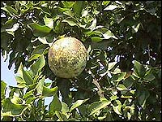

|
ECONOMICALLY
IMPORTANT PLANTS OF INDIA |
| Under-utilized Food and Fodder species and their wild relatives | Contributed by Ms.M.L Annapurna And Dr. Dhanapal, UAS, Bangalore |
Aegle marmelos (L.) corr. .
----- Taxonomic Details
Correct
Name : Aegle marmelos (L.) Corr
Family :Rutaceae
Synonyms : Crateva marmelos L.; Aegle marmelos
L.,var mahurensis;
Common Names :
English: Bael, Golden apple, Bael fruit, Bael Fruit Tree, Bael tree, Bengal Quince.
Hindi: Sirphal, Bael,Bilwa, Bel, Bed, Belphal, Bendphal, Bili, Bilva.
Tamil: Bilva, Kuvilam, Adhararuha, Alurigam, Bengal Quince, Bil, vilvam, Duraruha,
Goharitaki, Golden Apple, Holy Fruit, Holy fruit tree, Hridyagandha, Indian
Quince, Iyalbudi, Mavilangai, Tripatra,Trishikha, Villuvam, Vilva.
Kannada: Bilvapatre, Byaalada hannu,Bela, Bilva , Belapatri, Belpatra.
Sanskrit: Bilvam, Sriphala, Bilva.
Malayalam:Kuvalam, Vilvam, Iylambudi,Kantakadhya, Koovalam, Kovalam, Kulakam,
Kuvvalam, Mavilavu, Vilvah,Vilvam
Marati:Bael, Bel.
Tulu: Bilva, Maredi,Bel.
Telugu: Sailushamu, Sandiliyamu, Vam, Bilapattre, Bilvamu, Bilvavamu, Maredu,
Bilwa, Maluramu, Mangalya, Maredu, Muredu,
Bengli:Asholam, Bael, Bel, Pitaphala, Putivata, Quince.
BioticZone: Himalaya, Konkan plain,Peninsular India, Sub-Himalayan tracts,SubHimalayan
foothills,SubHimalayan tracts,Subtropical forests,West Coast.
Availability
:
Misc: Ajmer-Udaipur road, Ambevani, Bagaycha forest, Baggalmadgu,
Balod, Biligeri
Reserve Forest, Biruram bagh, Bombay, Bordabri, Champaran Hills, Chamundi
hills, Changlare, Chelama, Chikhalwal, Chispana, Corbett
National Park, Deccan, Dhamtari, Diguvametta, Elephanta island, Five falls,
Harsul, Hollong, Jhelum, Jholapur-Pardi forest, Kalrayans, Karakanalli Reserve
Forest, Karanji village, Mahur, Katghora, Konambe, Kotharia forest, Mount Abu,
N. Circars, Nallamalais, Paliwal Park, Palodi, Pathur, Pocharam, Ramgad forest,
Ramgarh State Forest, Regional Research Station, Brahmavar, sabargadga, Saidapur,
Salkumar, Sitanadi, Sogi
Reserve Forest, Someswar hills, Sudhagad, Talgaon, Throughtout India,
Travancore, Tropical regions, Village of Katraj ghats,
Country: Bangladesh, Burma, India, Indomalaysia, S.E.Asia, Sri Lanka,
Zone: Central, East, North, North East, South,West,
State: Andhra Pradesh, Arunachal Pradesh, Assam, Bihar, Goa Daman Diu,
Himachal Pradesh, Jammu
& Kashmir, Karnataka, Kerala, Madhya Pradesh, Maharashtra, Rajasthan,
Tamil Nadu, Uttar Pradesh, West Bengal,
District: Agra, Ajmer, Akola, Balaghat, Bangalore, Banswara, Belgaum, Bellary,
Bidar, Bilaspur, Bombay, Carnatic, Chamoli, Champaran, Chandrapur, Dakshin
Kannada, Damoh, Dhar, Dharmapuri, Dharwad, Durg, Ganganagar, Gulbarga, Hassan,
Hoshangabad, Jhalawar, Kameng, Kangra, Kolar, Kurnool, Medak, Mysore,
nagerhaveli, Nasik, Palani, Panna, Pune, Raichur, Raigad, Raipur, Salem, Seoni,
Simla, Sirohi, Srinagar, Surguja, Tikamgarh, Tiruchi, Tirunelveli, Tumkur, Uttar
Kannada and Yawatmal
In the Peninsular India, it is restricted to the dry and moist deciduous forests
of the Eastern and Western Ghats. It is cultivated in interior Karnataka (Bangalore,
Belgaum, Bidar, Dharwar, Hassan, Mysore, Raichur, Tumkur, Uttara Kannada) as
well as other regions.
In India it is found in cultivated
fields and Plains, deciduous forest,,Dry areas, dry deciduous forest, Dry forest,
Dry Hills ,dry localities, dry mixed forests, Dry tropical forest, forest boundary,
Forests, Gardens, Gardens and Roadsides, Hill slopes, lower valleys, mixed forests,
Moister parts, Near temples, open deciduous forests, Plains, planted on outskirts
of village, Road sides, Run wild, Scrub forest, Temple gardens, Upper Ghats
and waste land.
Status :
Commonly cultivated, Lower risk (LR).
There is no organised orcharding of bael in India. Its cultivation is restricted
and it grows mainly wild or in temple and home gardens. The fruit is available
in almost all the states of India but most abundantly available in Uttar Pradesh,
Bihar, West Bengal and Orissa. No data, however, is available regarding its
area and production.
DIAGNOSTIC
FEATURES
It is a small to moderate-sized tree with branches armed with strong axillary
spine 1-3 cm long. Bark dark grey, slightly corky, leaves alternate, 3-foliate,
rarely 5-foliate. Flowers greenish-white, sweet scented. Fruits globose, gray or yellowish, shell woody. Deciduous tree, up to
12-20 m high, armed; main trunk ca 30 cm across; spine 2-3 cm long; bark bluish-grey.
Leaves pinnately trifoliate, dimorphic; leaflets ovate-elliptic to elliptic-lanceolate,
terminal ones ca 13 x 6.5 cm and lateral ca 7 x 4 cm, apex blunt, base oblique,
margin shallowly crenate-serrate; lateral sessile and terminal stalked; petioles
slender, ca 6 cm long, glabrous.
REPRODUCTIVE
BIOLOGY
Flowers
large and white hermaphrodite. Calyx 4 or 5 toothed, petals 4-5. filaments about
40, short. Flowers with 4-5 stamens, anthers linear, erect. Berry large, spheroidal,
smooth with a hard shell, and 10-15 cells, fruits dry follicles, seeds glabrous.
Phenology:
Flowering occurs during March-September and also occurs during August-March.
Seed
Germination:
Bael is usually propagated by seeds. The
seeds are recalcitrant and can not be stored for longer periods under normal
storage conditions. Budding, patch or shield on seedling rootstocks in June
or July gives very good success. Air layering is also successful under humid
tropical conditions. In vitro propagation has also been standardized but it
is not feasible commercially.
There is no systematic work on varietal improvement of bael except selection of elite plants from seedling origin and propagate them vegetatively for further evaluation of clones and cutivation. However, bael provides an excellent scope for improvement of fruit quality by selection and breeding. In India, different strains are available. If the cultivation of bael is intensified after selecting an ideal variety, this fruit might emerge as a potential fruit for the processing industry. It can be propagated using seeds as well as vegetaive means. Natural regeneration by seed is not adequate. The seed does not retain viability for long and regeneration by root-suckers appears to be the chief mode of propagation in nature.
1. Seed Propagation:
The seeds should be obtained from fruits collected off the trees and not from the ground, Ripe fruits are collected during March - May.The rind is opened to release seeds. Separated seeds are washed thoroughly until the mucilage is completely removed and then dried in the sun for a few days. They may be coated with red lead, if necessary, to keep off ants. The seeds being perishable and recalcitrant, cannot withstand storage for long and have to be sown immediately, after collection, in raised or flat beds. Seeds can also be soaked in water for about 12 hours and then dibbled into poly bags or beds. In nursery beds , spacing of 20 x 10 cm is adopted. Germination is initiated in 10 to 15 days and lasts for about 20 days. About 56 to 80 percent of the seeds germinate. Duration of the nursery is from 3 to 12 months. (Planting stock can sometimes be maintained up to 2 years).
2. Vegetative Propagation
Through grafts: Ring grafting, where a ring of bark with a healthy bud is removed
from the suitable scion. This is placed on the stock plant where a similar ring
of bark is freshly cut and removed from very near the collar. Root stocks should
be 12 to 18 months old with stem of 0.75 cm thickness. In the case of scion,
axillary bud is selected after leaf fall and bud initiation. The ring with the
bud scion is placed around the similar ring made on the stock. In 30 to 45 days
after grafting the bud develops into a shoot indicating a fusion with the root
stock. 15 days after grafting, the top portion of the stock can be cut off to
facilitate early union.
3. Suckers
Bael propagated by seed seldom produces a plant true to type. It can be propagated through root suckers.
4. Budding
It can also be propagated successfully by budding on 1- or 2-year-old rootstock. Experiments were carried out on patch budding, T-budding and chip budding at monthly intervals from July to October and from March to June. Percentage of bud take was higher with patch budding. Budding in the month of June or July gave the best result.
5. Top working
Bael can be grafted onto a number of related plants, such as Aegle fraegle-gabonensis and Aeglopsis chevalieri . Old and uneconomic bael trees can be turned into economic and vigorous one by top working. In this method, the tree is headed back 1 to 5 metres above ground level during March and new shoots emerge from the stump. A few healthy shoots are retained and desired scions budded on them in the month of June. In this way inferior and old unproductive bael trees can be transformed into superior and remunerative fruit trees.
6. Tissue culture
Regeneration from seedling explant such as hypocotyl, nucellus, cotyledons, leaf, zygotic embryos has been reported
Cultivation:
There is no recommendation for the preparation of soil and pit or system and
methods of planting in bael trees. However, general method adopted in case of
citrus plants can be successfully followed. Bael, being a minor fruit, no systematic
work has yet been taken up on manuring, fertilization, irrigation, intercropping,
etc. It was found that many bael trees in southern Florida were suffering from
zinc deficiency. Application of small amount of zinc sulphate caused them to
make a vigorous new growth with green leaves and favoured the setting and maturing
of a good crop of fruit.
Harvesting
Practices and yeild:
Seedling bael trees require seven to eight years
to bear while budded plants start bearing at the age of four to five years.
The number and size of the fruit increase with advance in age and size of the
tree. Proper care is required for harvesting bael fruit. At the time of harvest,
the tree generally gets defoliated and the fruits are completely exposed. The
fruit should be picked individually from the tree with a portion of fruiting
stalk and should not be allowed to drop. Harvesting by shaking the tree is discouraged
as the fruits are likely to develop cracks on impact because of the very brittle
peel.
Yeild:
The number of fruits per tree may go up to 400 at the age of 15 to 20 years
depending on genotype, soil fertility and climate. However, a crop of 800 fruits
on 40- to 50-year- old seedling tree is not uncommon.
Parts
used
Fruits, Leaves, wood, roots, and bark.
1.Fruit is round to pear-shaped, 2-4" in diameter; covered with a smooth, hard rind. Pulp is orange, sweet and aromatic with many seeds in the 8-16 fruit cells. Used for drinks, jellies and eating out-of-hand.
2.The fruit is eaten as such or con sumed in the form of sherbat or jam and is considered 'cool' in its effect.
3.The Bael fruit is one of the most nutritious fruits, rich in riboflavin and used for the preparation of a number of products like candy, squash, toffee, slab, pulp powder and nectar.
Chemistry
The fruits contain reducing sugar, essential oil. abscisic acid and mar-melosin
(imperatorin). The roots ' are reported to contain auraptene, umbelliferone,
marmin, lupeol and skimmianine . Analysis of matured bark has yielded y-fagarine,
marmesin and umbelliferone. Leaves of A.marmelos have been investigated
in detail. Early investigations have reported isolation of aegelin and rutarine
(identical with skim- mianine) and p-sitosterol [4-10]. A recent report has
listed four alkaloids-0-(3,3-dimethylallyl) halfordi-nol, N-2-ethoxy-2 (4-methoxyphe-nyl)ethylcinnamide,
N-2-meth-oxy-2[4-(3',3'-dimethylallyloxy)phenyl] ethyl cinnamide and N-2-meth-
oxy-2-(4-methoxy phenyl) ethyl cinnamide, all of which have been isolated from
the leaves and their structures elucidated [11]. Further 1 work on leaves has
led to the iso- ( lation of N-2[{4-3,3'-dimethyl) allyloxy} ,- phenyl] ethyl
cinnamide, N-2-hydr- oxy-2-[4-{3,3'-dimethylallyloxy} . phenyl] ethyl cinnamide,
N-2-metn-1 oxy styryl cinnamide and N-2-hydro- 1 xy - 2- (4-hydroxyphenyl) ethyl
cin- namide and their characterisation The bael fruit is one of the most nutritious
fruits.It contains 61.5 g water, 1.8 g protein,
0.39 mg fat, 1.7 g minerals, 31.8 g carbohydrates,55 mg carotene, 0.13 mg thiamine,
1.19 mg riboflavin, 1.1 mg niacin and 8 mg vitamin C per 100 g of edible portion.
No other fruit has such a high content of riboflavin. A fair amount of pectin
is found in bael. The percentage of pectin on fresh fruit weight basis is 2.66
. Marmelosin is most probably the therapeutically active
principle of bael fruit. It has been isolated as a colourless crystalline compound.Among the flavouring compounds, terpene alcohol and
P-ionone are considered to contribute to the aroma of bael. At optimum ripeness,
fruit with excellent flavour contains a large quantity of an isomeric compound
of2,7-dimethyl-l,5,7-octatrien-3-ol. This compound is not found in unripe fruit
and seems to be important in making the bael flavour attractive.
1.Various chemical constituents, viz., alkaloids, coumarins and steroids have been isolated and identified from different parts of bael tree, such as leaves, wood, roots and bark.
2.Some studies have also been made on the essential oil, uses of gums in the preparation of adhesives, waterproofing and oil emulsion coating.
3.Root is Anti-diarrhoetic. Aqueous decoction of bael root is reported to have hypoglycaemic activity.
4.The ripe fruit is laxative and unripe fruit is prescribed for diarrohea and dysentery. The dry pulp of the fruit is known as "Bael Giri" and is given along with other ingredients for treating diarrhoea.
5.In Ayurvedic texts, the root- bark is one of the ingredients of "Dashmool",
which enters in the composition of preparations like "Dashmoolasava"
and in "Chavan- prash". It is considered a good re-storative tonic.
In actual practice, mainly bark of stem is used. The other ayurvedic preparations
of Aegle are "BilvaPanchak Kwatha", "Bilvadi Churna" and "BilvadiTaila".
In Unani,it is an ingredient of "Ma'jun Bawasir"
used for piles.
6.It has a great demand from Indian systems of medicine, such as Ayurvedic. The inhibitory properties of Aegle marmelos have been studied in great detail. The leaf extracts of bael completely inhibit the growth of Penicillium oxalicum. The seed oil inhibits the growth (of Pemcillium ilalicum and P. expansion).
7.Pesticidal property of bael leaves has also been reported. Fruits, roots and leaves are used. Ripe fruit pulp is laxative and is reported to be good for the heart and brain and in dyspepsia. Unripe fruits are reported to be useful in diarrhoea, dysentery and stomachalgia.
8.Roots are reported to be useful in cases of seminal weakness, uropathy, swellings, intermittent fever and gastric irritability in infants. Root bark is reported to be useful in hypochondriasis, melancholia and palpitation of heart and stomach pain. Leaf juice extract is applied externally in abscess.
9.It is used as a medicine to cure a number of diseases in India. It's medicinal properties have been listed within "Charaka Samhita," an early medical treatise.
10.Various chemical constituents, viz., alkaloids, coumarins and stiroids have been isolated and identified from different parts of bael tree, such as leaves, wood, roots and bark.
11.Some studies have also been made on the essential oil, uses of gums in the preparation of adhesives, waterproofing and oil emulsion coating.
12.The wood is used for carving; the shells are made into boxes and the flowers are made into perfume.
Fresh leaves are regularly sold in the market along with flowers for puja purposes.
Export Potential:
--------------------------------------------------------------------------------------------------
It is said to be sacred tree and leaves offered to Lord Shiva.
1.Singh, N. K. and Singh,
D. P., 2001, Ethnobotanical Survey Of District Balrampur, Flora And Fauna, Vol.7.
No.2 pp.59-66